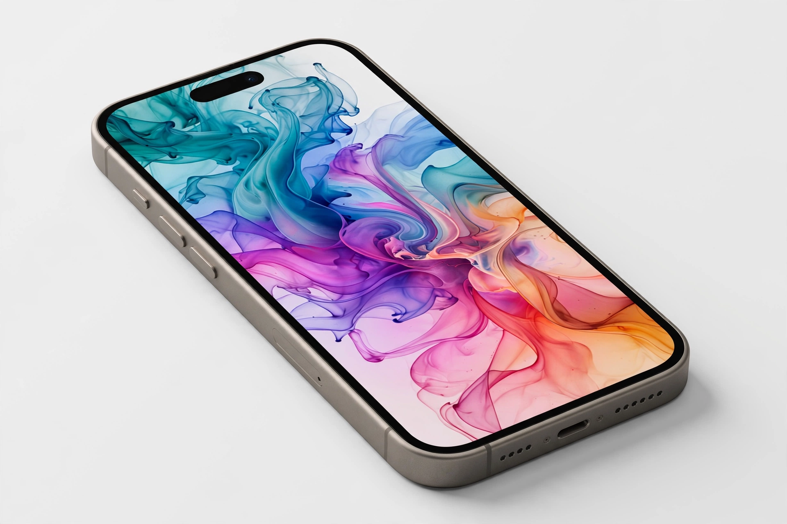

[Image: iPhone hero product shot on a clean background]
Featured products
- iPhone — the flagship line, in standard and Pro models with titanium finishes and Apple Intelligence features
- Mac — MacBook Air and MacBook Pro with Apple silicon (M-series chips), iMac, Mac mini and Mac Studio
- iPad — iPad Pro with M-series chips, iPad Air, and the entry iPad and iPad mini
- Apple Watch and AirPods — wearables woven through the homepage's seasonal campaigns
Apple Intelligence
Apple's personal-intelligence system, rolled out from late 2024 with iOS 18, adds writing tools, notification summaries, a redesigned Siri and image generation, processed on-device and with Private Cloud Compute, as the homepage messaging emphasises.
Services
Apple Music, Apple TV+, Apple Arcade, iCloud+, Apple Pay and the App Store form the services block the homepage rotates through, alongside trade-in, financing and Apple Card promotions in the US.